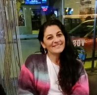

Sobre el Terapeuta
Camino de integración holística y estelar
✦ Trayectoria Profesional
A lo largo de más de una década de práctica clínica y holística, he acompañado a cientos de consultantes en sus procesos de autoconocimiento, sanación profunda y reorientación vital. Mi enfoque fusiona las herramientas terapéuticas contemporáneas con la sabiduría de los lenguajes simbólicos ancestrales.
Facilito espacios seguros de contención emocional y expansión de la conciencia, integrando la lectura de cartas natales, la sintonización energética y técnicas de desbloqueo psico-corporal orientadas a recuperar el eje interno y la soberanía personal.
✦ Formación Académica y Ancestral
Mi camino de estudio ha transitado tanto la rigurosidad de la academia como la profundidad de las escuelas herméticas tradicionales:
- Astrología Psicológica y Tradicional: Especialización en Astrología Arquetípica y Tránsitos Colectivos.
- Terapias Psicocorporales: Formación en técnicas de liberación somática y armonización sutil.
- Astronumerología y Símbolos Sagrados: Investigación continua en cosmología antigua y ciclos astronómicos históricos.
- Constelaciones y Facilitación Holística: Abordajes sistémicos para la comprensión de dinámicas vinculares y transgeneracionales.
✦ Propósito y Visión
Entiendo a la terapia no como una guía externa, sino como un espejo sagrado que devuelve al ser humano su propia brújula interna. Cada sesión es una alquimia donde el dolor se transforma en comprensión, y la incertidumbre en claridad estelar.